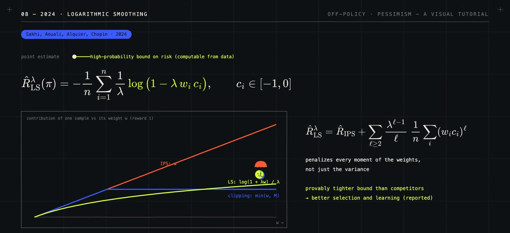

/ 8:14 VIDEO · 4 MIN READ
Pessimism pays off:
off-policy learning, from recommendation to LLM reasoning.
In 1952, Horvitz and Thompson showed how to correct a survey for unequal sampling: give each observation a weight inversely proportional to its chance of being included. The same idea appears in recommendation. Our logs contain what an old policy chose to show, but we want to know what would happen under a new one. Bottou et al. applied this reasoning to ad placement in 2013, and Swaminathan and Joachims turned it into a principle for learning from logged feedback in 2015.
The difficulty changes once an optimizer gets involved. A correction can be unbiased for a fixed policy and still be an attractive target for overfitting. The optimizer searches for policies with a high estimated value, including those whose estimate is high because one rare observation received an enormous weight. In offline reinforcement learning, Jin, Yang and Wang showed how pessimism—accounting for what the data does not reliably cover—can support provably efficient learning.
This is now a practical problem for LLM training. Completions may come from an older model or a separate inference engine while the trainer moves on. The sampling policy \(\mu\) and the policy being improved, \(\pi_\theta\), differ. My colleagues and I have followed this thread from recommendation in 2020 to reasoning models in 2026. Across those settings, the logarithm keeps reappearing.
The correction can become the problem
Inverse propensity scoring estimates the new policy's value by reweighting logged rewards:
\[\hat V_{\text{IPS}}(\pi) = \frac{1}{n} \sum_{i=1}^{n} \frac{\pi(a_i \mid x_i)}{\mu(a_i \mid x_i)}\, r_i.\]
Under the required coverage and sampling assumptions, the estimate is unbiased. But if the logging policy rarely selected an action the new policy favors, its importance weight can be huge. One lucky sample can dominate the estimate. For language models, sequence-level ratios multiply probabilities across many tokens, making the variance problem particularly severe.
Pessimism asks a different question: which value can the data support with high confidence? Logarithmic smoothing (2024) uses weights \(w_i = \pi(a_i \mid x_i) / \mu(a_i \mid x_i)\) and costs \(c_i \in [-1, 0]\) to construct
\[\hat R^\lambda_{\text{LS}}(\pi) = -\frac{1}{n} \sum_{i=1}^{n} \frac{1}{\lambda} \log\big(1 - \lambda\, w_i c_i\big).\]
Small weighted costs remain close to their unsmoothed values, while large ones are compressed. The estimator participates in a high-probability bound; the useful guarantee comes from that bound and its assumptions, rather than from compression alone.

From recommendation objectives to reasoning policies
In 2020, log-IPS reweighted log-probabilities rather than probabilities, giving a convex objective in the formulation studied there. In 2024, logarithmic smoothing produced tighter high-probability bounds and better policy selection in our experiments. These are different constructions, but both reduce the optimizer's opportunity to turn sparse evidence into excessive confidence.
For language models, removing importance weights yields objectives such as \(\mathbb{E}_{y \sim \mu}[\hat A \log \pi_\theta(y \mid x)]\), with \(\hat A\) an advantage. For non-negative weights \(g\), the idealized solution is \(\pi^* \propto \mu \cdot g\): probability is redistributed within the support of the data. That does not mean the redistribution must always be small. Negative advantages also change the problem and can drive log-probabilities toward \(-\infty\).
RoiRL (2025) used this family of ideas for reasoning without labeled answers, obtaining rewards from majority vote and reporting training up to 2.5× faster than test-time RL. In our 2026 work, we studied why particular weight-free objectives are more conservative than their nominal form suggests. Their induced target is tempered by the Lambert W function:
\[\pi^*(y \mid x) = \frac{\pi_{\text{old}}(y \mid x)}{\tau}\, W_0\big(\tau\, e^{A(x, y)/\beta}\big),\]
with \(\beta\) the regularization strength and \(\tau\) a normalizing constant. Since \(W_0\) grows roughly logarithmically at large arguments, high advantages are moderated rather than translated directly into exponential amplification. This helps explain the stability of methods such as OAPL and motivates the shifted advantage \(\hat A_i = r_i - \bar r + \beta\).
The connection from 2020 to 2026 is my reading of the work, not a claim that every logarithmic objective has the same guarantee. Pessimism also limits how aggressively we can exploit apparent improvements. Its value is that it keeps the strength of an update closer to the strength of the evidence—important whenever the optimizer is more capable of finding a favorable estimate than the dataset is of justifying it.